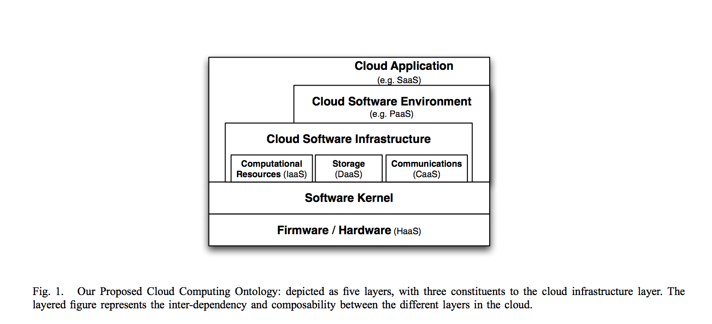
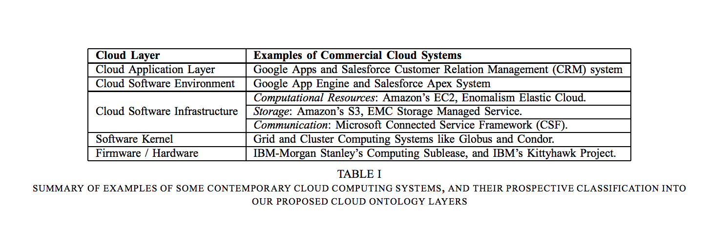

Towards a Unified Ontology of Cloud Computing
Table of Contents
Toward a Unified Ontology of Cloud Computing by L. Youseff, M. Butrico, and D. Da Silva (2008 Grid Computing Environments Workshop, Austin, TX, pp. 1-10)
This paper is one of the early (relatively) works that really nails down what cloud computing is all about. Back in 2008, AWS was barely a toddler - only a couple years in the market - and Google Cloud was just getting its feet wet. Looking back now, it's pretty wild how spot-on their classification was. This is basically how we still think about cloud services today.
What These Guys Got Right
Cloud Computing is one contemporary technology in which the research community has recently embarked. Manifesting itself as the descendant of several other computing research areas such as Service-Oriented Architecture, distributed and grid computing, and virtualization, cloud computing inherits their advancements and limitations.
The authors kept it simple with two big ideas: composability and layering. Basically, bigger cloud components are built from smaller ones (borrowed from SOA), and each layer sits on top of the layer below it. Pretty straightforward, but it works.

Breaking Down the Layers
Cloud Application Layer (aka SaaS)
The Cloud Application Layer is what regular people actually see when they use cloud stuff. This is Software as a Service - something we totally take for granted now. It's probably what kicked off the whole software startup boom. Think about it - suddenly you could get an app to market without worrying about installations, maintenance, or all the headaches that come with on-prem deployments.
But even back then, they saw the problems coming:
Despite all the advantageous benefits of this model, several deployment issues hinder its wide adoption. Specifically, the security and availability of cloud applications are two of the major issues in this model, and they are currently avoided by the use of lenient service level agreements (SLA)
Honestly, we've come a long way since then. The whole ecosystem exploded with monitoring tools (Prometheus, Datadog), containerization (Docker), orchestration (K8s), and solid CI/CD pipelines (Jenkins, TeamCity, Travis). Most of those deployment nightmares? Pretty much solved.
Cloud Software Infrastructure Layer (PaaS Territory)
This is what we'd call Platform as a Service nowadays. It's all the developer tools and abstractions that make building SaaS apps way easier. The AWS CLI is a perfect example - you get APIs for scaling, load balancing, all that infrastructure stuff without having to think too hard about it.
This layer is where most of the magic happens for developers. It's where all those nice abstractions live that make getting from code to production less painful. Of course, you can always skip this layer if you want more control (and more pain, let's be honest).
Cloud Software Environment Layer (The Foundation)
This is where things get interesting. The authors broke this down into three chunks:
1. Computational Resources (Good Old IaaS)
Virtualization is what makes this whole thing work. It's literally how cloud providers make money - they take expensive hardware and time-share it across a bunch of users. Amazon's EC2 is the poster child here.
But here's where the authors got really smart about the problems:
This was specifically enabled by two virtualization technologies: paravirtualization and hardware-assisted virtualization. Although both virtualization technologies have addressed performance isolation between virtual machines contending on common resources, performance interference between VMs sharing the same cache and TLB hierarchy cannot yet be avoided. Further, the emergence of multicore machines into mainstream servers exacerbate this performance interference problem. In turn, the lack of strict performance isolation between VMs sharing the same physical node has resulted in the inability of cloud providers to give strong guarantees for performance to their clients. Instead, they offer them unsatisfactory SLAs in order to provide competitive pricing for the service. Such weak guarantees, unfortunately, can inject themselves up the layers of the cloud stack, and affect the SLAs of the cloud systems built above the IaaS's SLAs.
They basically predicted the "noisy neighbor" problem that still drives cloud engineers crazy today. Pretty impressive for 2008.
2. Data Storage
Storage services like S3, RDS, and all their cousins. The authors didn't dive deep here, but this ended up being huge.
3. Communication (The Sleeper Hit)
This is where things get really interesting. The authors were way ahead of their time on this one:
Consequently, cloud systems are obliged to provide some communication capability that is service oriented, configurable, schedulable, predictable, and reliable. Towards this goal, the concept of Communication as a Service (CaaS) emerged to support such requirements, as well as network security, dynamic provisioning of virtual overlays for traffic isolation or dedicated bandwidth, guaranteed message delay, communication encryption, and network monitoring.
They basically described what we'd later see with Kafka, Apache Flink, AWS Kinesis, SNS - all that messaging infrastructure stuff. Most of the innovation here has come from applications that developers deploy themselves, though we're starting to see more cloud-native options. I still think there's room for better application-independent communication services at this layer.
The authors also mentioned Software Kernel and Hardware/Firmware layers, but those are mostly the cloud provider's problem, not ours.

The Real Origin Story
Here's one of my favorite parts of the paper - they actually explain why cloud computing happened:
Huge corporations, like Amazon and Google generally build their computing infrastructure to support the peak demand of their business. As the average demand of the system is however, several times smaller than the peak demand, their computing infrastructure is usually under-utilized and the cost of its operation constitutes an additional expense. In order to offset this extra expense, they have offered utilizing this surplus computing power as a service when it is not used by their business systems. Their offerings came at very attractive prices since they have deployed their systems at a large scale, and thus benefit from the economy-of-scale.
This is the real origin story that everyone forgets. Cloud computing didn't start as some grand vision to transform how we build software. It started because Amazon and Google had a bunch of servers sitting around doing nothing most of the time, and they figured they might as well make some money off them.
Still Fighting the Same Battles
The authors called out security and monitoring of large distributed services as the biggest challenges. Guess what? We're still dealing with these exact same problems 15+ years later. Some things never change.
Looking Back
Reading this paper now is pretty mind-blowing. These guys basically predicted the entire structure of modern cloud computing when AWS was still figuring out what it wanted to be. Their layered model became the industry standard, they spotted all the major challenges we'd face, and they understood that cloud wasn't just another tech trend - it was the natural evolution of a bunch of existing ideas coming together.
The fact that their framework still makes sense today tells you they were onto something fundamental about how this stuff actually works.